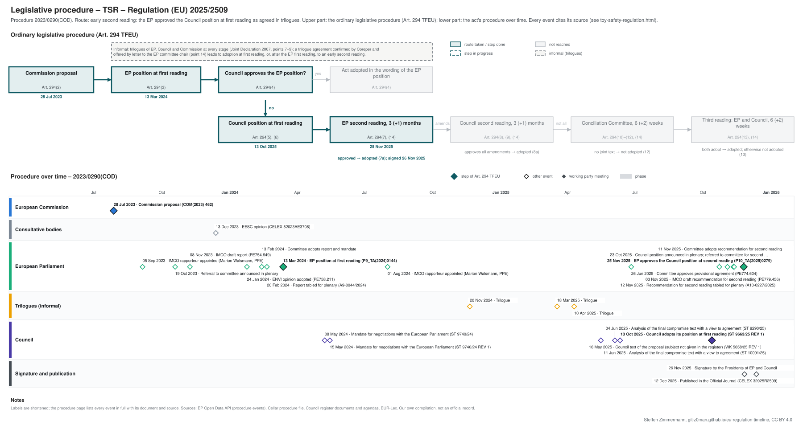

← Regulation timeline › Toy Safety Regulation › Legislative procedure · All procedures
Toy Safety Regulation – Regulation (EU) 2025/2509
Procedure 2023/0290(COD), completed. Drawing: SVG · PNG · PDF (A3) · draw.io · Page as Markdown: toy-safety-regulation.md


| Stage | Completed, published 12 Dec 2025 |
|---|---|
| Route (Art. 294 TFEU) | Early second reading: the EP approved the Council position at first reading as agreed in trilogues |
| Latest activity | 12 Dec 2025 · Signature and publication: Published in the Official Journal (CELEX 32025R2509) |

European Parliament committees
| Committee | Role | Rapporteur | Shadow rapporteurs |
|---|---|---|---|
| IMCO Internal Market and Consumer Protection | Responsible | Marion Walsmann (EPP), appointed 5 Sep 2023, Marion Walsmann (EPP), appointed 1 Aug 2024 | Brando Benifei (S&D), Ernő Schaller-baross (PfE), Piotr Müller (ECR), Anna Stürgkh (Renew), Katrin Langensiepen (Greens/EFA), Luke Ming Flanagan (The Left) |
| ? | Role not given | not yet appointed | Alessandra Basso (ID), Henk Jan Ormel (EPP), Brando Benifei (S&D), Beata Mazurek (ECR), Vlad-Marius Botoş (Renew), Billy Kelleher (Renew), Katrin Langensiepen (Greens/EFA), Sara Matthieu (Greens/EFA), Idoia Villanueva Ruiz (The Left), Stelios Kouloglou (The Left) |
| ENVI Environment, Climate and Food Safety | Role not given | Sara Cerdas (S&D), appointed 24 Oct 2023 | – |
Source: EP Open Data API (participations) and the Legislative Observatory (joint committee, opinions declined); names link to each Member's page on the EP website. The API names no committee for shadow rapporteurs; they are assigned by the EP's order of participants, which groups each committee.
Events
| Date | Actor | Event | Document | Source |
|---|---|---|---|---|
| 28 Jul 2023 | European Commission | Commission proposal (Art. 294(2) TFEU) | COM(2023) 462 | Cellar procedure file 2023/290 (CELEX 52023PC0462) |
| 5 Sep 2023 | European Parliament | IMCO rapporteur appointed (Marion Walsmann, PPE) | EP procedure file | EP Open Data API, procedure 2023-0290 (participation RAPPORTEUR) |
| 19 Oct 2023 | European Parliament | Referral to committee announced in plenary | EP procedure file | EP Open Data API, procedure 2023-0290 (referral) |
| 8 Nov 2023 | European Parliament | IMCO draft report | PE754.649 | EP Open Data API, procedure 2023-0290 (committee tabling report) |
| 13 Dec 2023 | Consultative bodies | EESC opinion | CELEX 52023AE3708 | Cellar procedure file 2023/290 |
| 24 Jan 2024 | European Parliament | ENVI opinion adopted | PE758.211 | EP Open Data API, procedure 2023-0290 (committee adopting opinion) |
| 13 Feb 2024 | European Parliament | Committee adopts report and mandate | EP procedure file | EP Open Data API, procedure 2023-0290 (committee adopting report) |
| 20 Feb 2024 | European Parliament | Report tabled for plenary | A9-0044/2024 | EP Open Data API, procedure 2023-0290 (tabling plenary) |
| 13 Mar 2024 | European Parliament | EP position at first reading (Art. 294(3) TFEU) | P9_TA(2024)0144 | EP Open Data API, procedure 2023-0290 (plenary amend proposal) |
| 8 May 2024 | Council | Mandate for negotiations with the European Parliament | ST 9740/24 | Cellar procedure file 2023/290 (Council register) |
| 15 May 2024 | Council | Mandate for negotiations with the European Parliament | ST 9740/24 REV 1 | Cellar procedure file 2023/290 (Council register) |
| 1 Aug 2024 | European Parliament | IMCO rapporteur appointed (Marion Walsmann, PPE) | EP procedure file | EP Open Data API, procedure 2023-0290 (participation RAPPORTEUR) |
| 20 Nov 2024 | Trilogues (informal) | Trilogue | EP procedure file | EP Open Data API, procedure 2023-0290 (interinstitutional negotiation) |
| 18 Mar 2025 | Trilogues (informal) | Trilogue | EP procedure file | EP Open Data API, procedure 2023-0290 (interinstitutional negotiation) |
| 10 Apr 2025 | Trilogues (informal) | Trilogue | EP procedure file | EP Open Data API, procedure 2023-0290 (interinstitutional negotiation) |
| 16 May 2025 | Council | Council text of the proposal (subject not given in the register) | WK 5658/25 REV 1 | Cellar procedure file 2023/290 (Council register) |
| 4 Jun 2025 | Council | Analysis of the final compromise text with a view to agreement | ST 9290/25 | Cellar procedure file 2023/290 (Council register) |
| 11 Jun 2025 | Council | Analysis of the final compromise text with a view to agreement | ST 10091/25 | Cellar procedure file 2023/290 (Council register) |
| 26 Jun 2025 | European Parliament | Committee approves provisional agreement | PE774.604 | EP Open Data API, procedure 2023-0290 (committee approve provisional agreement) |
| 13 Oct 2025 | Council | Council adopts its position at first reading (Art. 294(5) TFEU) | ST 9663/25 REV 1 | Cellar procedure file 2023/290 (Council register) |
| 23 Oct 2025 | European Parliament | Council position announced in plenary; referred to committee for second reading | EP procedure file | EP Open Data API, procedure 2023-0290 (referral) |
| 3 Nov 2025 | European Parliament | IMCO draft recommendation for second reading | PE779.456 | EP Open Data API, procedure 2023-0290 (committee tabling report) |
| 11 Nov 2025 | European Parliament | Committee adopts recommendation for second reading | EP procedure file | EP Open Data API, procedure 2023-0290 (committee adopting report) |
| 12 Nov 2025 | European Parliament | Recommendation for second reading tabled for plenary | A10-0227/2025 | EP Open Data API, procedure 2023-0290 (tabling plenary) |
| 25 Nov 2025 | European Parliament | EP approves the Council position at second reading (Art. 294(7)(a) TFEU) | P10_TA(2025)0279 | EP Open Data API, procedure 2023-0290 (plenary approve council position) |
| 26 Nov 2025 | Signature and publication | Signature by the Presidents of EP and Council | EP procedure file | EP Open Data API, procedure 2023-0290 (signature) |
| 12 Dec 2025 | Signature and publication | Published in the Official Journal | CELEX 32025R2509 · en.md de.md | EP Open Data API, procedure 2023-0290 (publication official journal) |
Documents
Every document the Council register, the EU database of the Parliament of Austria or the EP lists for the procedure, with its state: public documents link to the official file; documents that are not public link to their entry in the Austrian database where there is one (metadata only). Status: public; not public; not public, leak available (an unofficial copy is known to circulate outside the institutions; it is neither published nor quoted here). Released: when a document listed as not public was released, by the date of the Council's public PDF (a technical date) or else the day our daily check found it public.
| Date | Document | Kind | Subject | Status | Released | Text |
|---|---|---|---|---|---|---|
| 28 Jul 2023 | ST 12234/23 | Council: transmission note | Proposal for a Regulation of the European Parliament and of the Council on the safety of toys and repealing Directive 2009/48/EC | public status unknown | – | – |
| 28 Jul 2023 | ST 12234/23 ADD 1 | Council: transmission note | Annexes to the proposal for a Regulation of the European Parliament and of the Council on the safety of toys and repealing Directive 2009/48/EC | public status unknown | – | – |
| 28 Jul 2023 | ST 12234/23 ADD 2 | Council: transmission note | Commission staff working document Subsidiarity Grid Accompanying the document proposal for a Regulation of the European Parliament and of the Council on the … | public status unknown | – | – |
| 28 Jul 2023 | ST 12234/23 ADD 3 | Council: transmission note | Commission staff working document impact assessment report Accompanying the document proposal for a Regulation of the European Parliament and of the Council on … | public status unknown | – | – |
| 28 Jul 2023 | ST 12234/23 ADD 4 | Council: transmission note | Commission staff working document executive summary of the impact assessment report Accompanying the document proposal for a Regulation of the European … | public status unknown | – | – |
| 28 Jul 2023 | ST 12234/23 ADD 5 | Council: transmission note | Regulatory scrutiny board opinion on the Proposal for a Regulation of the European Parliament and of the Council on the safety of toys and repealing Directive … | public status unknown | – | – |
| 8 Nov 2023 | PE754.649 | EP draft report (rapporteur) | DRAFT REPORT on the proposal for a regulation of the European Parliament and of the Council on the safety of toys and repealing Directive 2009/48/EC | public | – | – |
| 1 Dec 2023 | ST 16319/23 | Council: transmission note | Opinion on the application of the Principles of Subsidiarity and Proportionality | public status unknown | – | – |
| 8 Dec 2023 | ST 16578/23 | Council: transmission note | Opinion on the application of the Principles of Subsidiarity and Proportionality | public status unknown | – | – |
| 13 Dec 2023 | CELEX 52023AE3708 | Opinion | Opinion of the European Economic and Social Committee on the ‘Proposal for a regulation of the European Parliament and of the Council on the safety of toys and … | public | – | – |
| 21 Dec 2023 | ST 17090/23 | Council: transmission note | Opinion of the European Economic and Social Committee on the Proposal for a regulation of the European Parliament and of the Council on the safety of toys and … | public status unknown | – | – |
| 12 Feb 2024 | PE758.211 | EP opinion | Opinion on the proposal for a regulation of the European Parliament and of the Council Safety of toys and repealing Directive 2009/48/EC | public | – | – |
| 20 Feb 2024 | A9-0044/2024 | EP committee report | Report on the proposal for a regulation of the European Parliament and of the Council on the safety of toys and repealing Directive 2009/48/EC | public | – | – |
| 13 Mar 2024 | P9_TA(2024)0144 | EP position | Safety of toys and repealing Directive 2009/48/EC | public | – | – |
| 8 May 2024 | ST 9740/24 | Council position (mandate) | Mandate for negotiations with the European Parliament | public | – | – |
| 15 May 2024 | ST 9740/24 REV 1 | Council position (mandate) | Mandate for negotiations with the European Parliament | public | – | – |
| 3 Jul 2024 | ST 10599/24 | Council note | Outcome of the European Parliament's first reading (Strasbourg, 11 to 14 March 2024) | public status unknown | – | – |
| 10 Mar 2025 | ST 6755/25 | Council note | Preparation for the trilogue | public status unknown | – | – |
| 28 Mar 2025 | ST 7481/25 | Council note | Preparation for the trilogue | public status unknown | – | – |
| 3 Apr 2025 | ST 7481/25 COR 1 | Council note | Preparation for the trilogue | public status unknown | – | – |
| 13 May 2025 | WK 6266/25 | Council note | Presidency flash : Working Party on Technical Harmonisation (Dangerous Substances/Chemicals - Safety of Toys) on 20 May 2025 | public status unknown | – | – |
| 16 May 2025 | WK 5658/25 REV 1 | Council text | Proposal for a Regulation on the safety of toys: 4-column document | public | – | – |
| 4 Jun 2025 | ST 9290/25 | Provisional agreement | Analysis of the final compromise text with a view to agreement | public | – | – |
| 11 Jun 2025 | PE774.604 | Provisional agreement | Provisional agreement resulting from interinstitutional negotiations Proposal for a regulation of the European Parliament and of the Council on the safety of … | public | – | – |
| 11 Jun 2025 | ST 10091/25 | Provisional agreement | Analysis of the final compromise text with a view to agreement | public | – | – |
| 29 Sep 2025 | ST 9663/25 | Council position at first reading | Position of the Council at first reading with a view to the adoption of a Regulation of the European Parliament and of the Council on the safety of toys and … | public status unknown | – | – |
| 1 Oct 2025 | ST 9663/25 ADD 1 | Council position at first reading | Position of the Council at first reading with a view to the adoption of a Regulation of the European Parliament and of the Council on the safety of toys and … | public status unknown | – | – |
| 3 Oct 2025 | ST 9663/25 ADD 1 COR 1 | Council position at first reading | Position of the Council at first reading with a view to the adoption of a Regulation of the European Parliament and of the Council on the safety of toys and … | public status unknown | – | – |
| 13 Oct 2025 | ST 9663/25 REV 1 | Council position at first reading | Position of the Council at first reading with a view to the adoption of a Regulation of the European Parliament and of the Council on the safety of toys and … | public status unknown | – | – |
| 15 Oct 2025 | ST 9663/25 REV 1 ADD 1 | Council position at first reading | Position of the Council at first reading with a view to the adoption of a Regulation of the European Parliament and of the Council on the safety of toys and … | public status unknown | – | – |
| 3 Nov 2025 | PE779.456 | EP draft report (rapporteur) | Draft recommendation for second reading on the Council position at first reading with a view to the adoption of a regulation of the European Parliament and of … | public | – | – |
| 12 Nov 2025 | A10-0227/2025 | EP committee report | Recommendation for second reading on the Council position at first reading with a view to the adoption of a regulation of the European Parliament and of the … | public | – | – |
| 25 Nov 2025 | P10_TA(2025)0279 | EP position | Safety of toys and repealing Directive 2009/48/EC | public | – | – |
Texts as Markdown
Unofficial Markdown conversions for reading, searching and project folders; only the official document is authentic. "Read" opens the rendered text on GitHub, where a link to a provision (#art-13, #rec-12, #annex-i) jumps to it.
| Date | Stage | Document | Markdown | Read |
|---|---|---|---|---|
| 12 Dec 2025 | Official Journal | CELEX 32025R2509 | en de | GitHub |
| 9 Feb 2026 | Corrigendum | CELEX 32025R2509R(01) | de | GitHub |
Standardisation
Standardisation requests (Art. 10 of Regulation (EU) No 1025/2012) ask CEN, CENELEC and ETSI to draft harmonised standards in support of the act; standards cited in the Official Journal give a presumption of conformity. Planned requests come from the Commission's annual Union work programmes for European standardisation (Art. 8), which are plans, not decisions. Deadlines as set in the request's annexes (hand-checked).
M/589 – C(2022)7410 (under execution)
COMMISSION IMPLEMENTING DECISION of 24.10.2022 on a standardisation request to the European Committee for Standardisation and the European Committee for Electrotechnical Standardisation as regards toys in support of Directive 2009/48/EC of the European Parliament and of the Council
adopted 24 Oct 2022; expires 25 Oct 2026; ESOs: CEN, CENELEC. eNorm · decision and annexes · en.md · de.md
Planned (annual Union work programmes)
| Year | Action (open for its text) |
|---|---|
| 2025 | 75. Safety of toys
Work programme 2025, Annex, Action 75: en.md · de.md · original on EUR-Lex ↗ |
| 2026 | 31. Safety of toys
Work programme 2026, Annex, Action 31: en.md · de.md · original on EUR-Lex ↗ |
Work at the standardisation organisations
Projects of CEN, CENELEC and ETSI for the act, from their public work programmes: status, date of the current stage and the next one, and for CEN-CENELEC the forecasted date of the formal vote. Drafts of harmonised standards are not public; only the citation of a standard's reference in the Official Journal gives a presumption of conformity.
| Body | Project | Title | Status | Next step | Vote (forecast) | Request |
|---|---|---|---|---|---|---|
| CEN/TC 52 | EN 71-13:2021+A2:2024 WI 00052173 | Safety of toys - Part 13: Olfactory board games, cosmetic kits and gustative games | Published (20 Nov 2024) | – | – | M/589 |
| CEN/TC 52 | EN 71-14:2025 WI 00052166 | Safety of toys - Part 14: Trampolines for domestic use | Published (29 Oct 2025) | – | – | M/589 |
| CEN/TC 52 | EN 71-15:2025 WI 00052128 | Safety of toys – Part 15: Formamide in foam toy materials (content) | Published (26 Feb 2025) | – | – | M/589 |
| CEN/TC 52 | EN 71-16:2025 WI 00052133 | Safety of toys – Part 16: Certain chlorinated phosphorus flame retardants (TCEP, TCPP, TDCP) in toy materials | Published (26 Feb 2025) | – | – | M/589 |
| CEN/TC 52 | EN 71-17:2025 WI 00052134 | Safety of toys - Part 17: Certain isothiazolinones (MIT, CIT, BIT) in aqueous toy materials | Published (26 Feb 2025) | – | – | M/589 |
| CEN/TC 52 | EN 71-18:2024 WI 00052135 | Safety of toys - Part 18: Phenol in aqueous (content) and polymeric (migration) toy materials | Published (18 Dec 2024) | – | – | M/589 |
| CEN/TC 52 | EN 71-19:2024 WI 00052136 | Safety of toys - Part 19: Migration of bisphenol A from toy materials | Published (18 Dec 2024) | – | – | M/589 |
| CEN/TC 52 | EN 71-1:2026 WI 00052162 | Safety of toys - Part 1: Mechanical and physical properties | Published (28 Jan 2026) | – | – | M/589 |
| CEN/TC 52 | EN 71-20:2025 WI 00052171 | Safety of toys - Part 20: Microbiological safety of toys containing accessible aqueous media | Published (17 Dec 2025) | – | – | M/589 |
| CEN/TC 52 | EN 71-2:2020+A1:2025 WI 00052176 | Safety of toys - Part 2: Flammability | Published (11 Jun 2025) | – | – | M/589 |
| CEN/TC 52 | EN 71-3:2019+A2:2024 WI 00052174 | Safety of toys - Part 3: Migration of certain elements | Published (4 Dec 2024) | – | – | M/589 |
| CEN/TC 52 | EN 71-4:2020+A1:2025 WI 00052175 | Safety of toys - Part 4: Experimental sets for chemistry and related activities | Published (2 Apr 2025) | – | – | M/589 |
| CEN/TC 52 | EN 71-5:2025 WI 00052168 | Safety of toys - Part 5: Chemical toys (sets) other than experimental sets | Published (10 Dec 2025) | – | – | M/589 |
| CEN/TC 52 | EN 71-7:2025 WI 00052169 | Safety of toys - Part 7: Finger paints - Requirements and test methods | Published (29 Oct 2025) | – | – | M/589 |
| CEN/TC 52 | EN 71-8:2026 WI 00052167 | Safety of toys - Part 8: Activity toys for domestic use | Published (28 Jan 2026) | – | – | M/589 |
| CLC/TC 61 | EN IEC 62115:2020/FprA1:2025 | Electric toys - Safety | Under Approval (19 Sep 2025) | next stage (20 Oct 2025) | 5 Aug 2025 | M/589 |
| CLC/TC 61 | EN IEC 62115:2020/prAB:2026 | Electric toys - Safety | Under Approval (10 Apr 2026) | next stage (18 Aug 2026) | 18 Aug 2026 | M/589 |
Sources: CEN/TC 52; CLC/TC 61.
Committees and expert groups
Comitology committees of Member State representatives give opinions on draft implementing acts (Regulation (EU) No 182/2011); expert groups advise the Commission on delegated acts, guidance and implementation; groups set up by an act itself (e.g. the NIS Cooperation Group) bring together the Member States, the Commission and agencies. Meetings and documents as published in the Comitology Register, the Register of Commission expert groups and on the Commission's pages of these groups, from 2024 on.
Expert Group on Toys Safety
Expert group E01360, GROW. Official source: Register of Commission expert groups ↗
| Date | Meeting | Documents |
|---|---|---|
| 10 Sep 2026 | Working group on Chemicals - Expert Group on the Safety of Toys | – |
| 18 May 2026 | Ad hoc subgroup Chemicals on asbestos in toy sands | agenda · minutes |
| 10 Feb 2026 | CHEMICALS' SUBGROUP OF THE EXPERT GROUP ON TOYS SAFETY | agenda · minutes |
| 7 Oct 2025 | Expert group on Toys Safety | agenda · agenda · minutes |
| 1 Oct 2024 | Expert Group on Toys Safety | agenda · minutes |